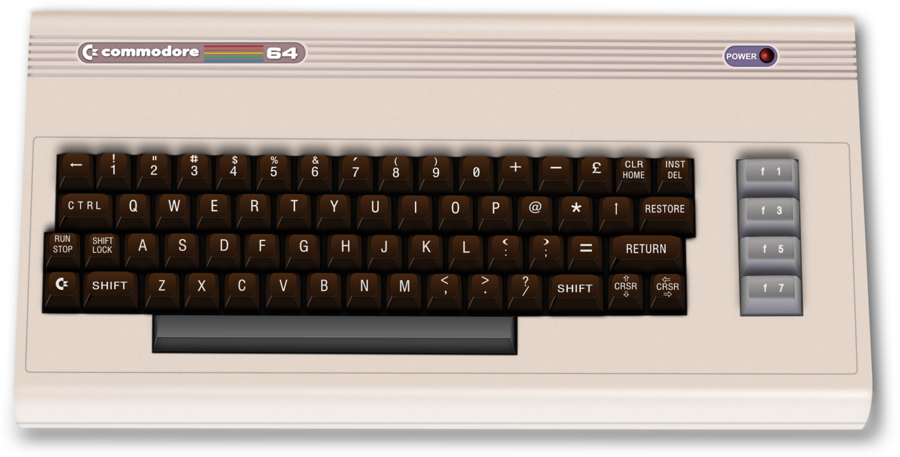

February 25 2022
We're glad to have the opportunity to share his thoughts on why Roblox is the C-64 of our time, and his mission to empower an emerging generation of software creators, both non-coders and coders.
Just showing this image to a coder about my age likely puts them at risk of launching into a raving nostalgic rant. However, most, if not all, of my childhood friends that later found a career/lifestyle in coding started with this blue screen (replacing, or at least competing with a likely unhealthy obsession with Lego).
From C-64, we graduated to AMOS (if you were staying true to Commodore), the beautiful piece of software written by François Lionet and Constantin Sotiropoulos that became one of the best selling non-game titles for the Amiga with over 40,000 copies sold. And when you moved on to the PC, the threshold of learning C and C++ just didn’t feel very steep.
The crux is that everyone had to get past this blue wall. Even if all you wanted was to get into Ghosts 'n Goblins as fast as possible, you still needed to pick up a few commands. And the C-64 shipped with the BASIC manual. What if while you were unboxing your shiny new iPad, the first thing you picked up was a 200-page book on Swift and Objective-C. I bet a big chunk of this generation of software developers were accidental coders. And the booming game industry in the Nordics (where I live) likely owes a lot to these old machines.
Then we entered the dark ages of the late 90s and the first decades of the 2000s. At this time, when you inspected someone's TV setup, all you found were Nintendos, Playstations and X-Boxes, completely useless with their user-friendly interfaces and their read-only cartridges and CDs. If you wanted to code on these machines (which was great), you already needed a degree in computer science and the patience to ply through guides on homebrew hacking. If you happened to be the weird kid that got a PC (or were forced by your parents), you should consider yourself lucky. But even then, the step to get into coding was not obvious.
Another thing, at this time, games (which was the likely ambition for the aspiring coders) were getting good. The graphics were fantastic (thanks to all the old C-64 coders now working day and night at the fancy game studios). The 2D blocky Italian plumber had been replaced by huge immersive 3D worlds filled with hundreds of beautifully animated characters. Anything you happened to create (if you had the skills and drive to pick up programming) would likely look pretty embarrassing in comparison and certainly not something that got you any nerd street cred (some might argue that this was the time of early web with HTML and Javascript playing the sort of the same role, but is that really coding?).
Fast forward to about 2016 when a sort of awkward but charming game creation system called Roblox (created by David Baszucki and Erik Cassel in 2004 and released in 2006) started to gain popularity. I know that it has faced criticism for marketing microtransactions to young children, but I’m talking primarily about Roblox Studio.
Roblox allows players to create their own games using its proprietary engine, Roblox Studio, which other users can then play. The tool shares much of its DNA with existing professional game engines but at a much simpler level. Lua is the programming language of choice, and it bears a lot of resemblance to BASIC but with more modern software development concepts. Most games produced using Roblox Studio are developed by minors, and 20 million games a year are produced using it.
It has never been easier for a kid to get into serious programming. YouTube is littered with videos and tutorials on pretty much every Roblox concept you can imagine. And from the most unexpected sources as well - while trying to learn the engine, I’ve found myself repeatedly watching videos by 8-year olds on how to do Tween animation or custom Camera scripts.
But I would argue that the most crucial aspect that is often overlooked is that the general quality of Roblox games is pretty bad, which is great! It means that the difference between what my eldest son and I are creating together is not too far from that trendy crazy tycoon game, “obby” or pet simulator of the time. Making a new game does not seem insurmountable since it is not expected to be a AAA title.
I don’t think I can overstate the importance of this! Spending time writing games with my kids is amazing, and seeing how fast their skills develop is something I couldn’t possibly have imagined 35 years ago.
Of course, each generation of platforms enables new creativity and businesses unimaginable to the last. And I hope that I’m part of contributing to the next generation as well.
I’m a co-founder and software developer working at Noodl, a design programming platform built around a visual programming model. Our mission is to empower an emerging generation of software creators, both non-coders and coders alike, with tools that enable them to create visionary software.
The good news is that my son has already been producing apps in Noodl, and this makes me believe I’m on the right track.
Also published HERE.